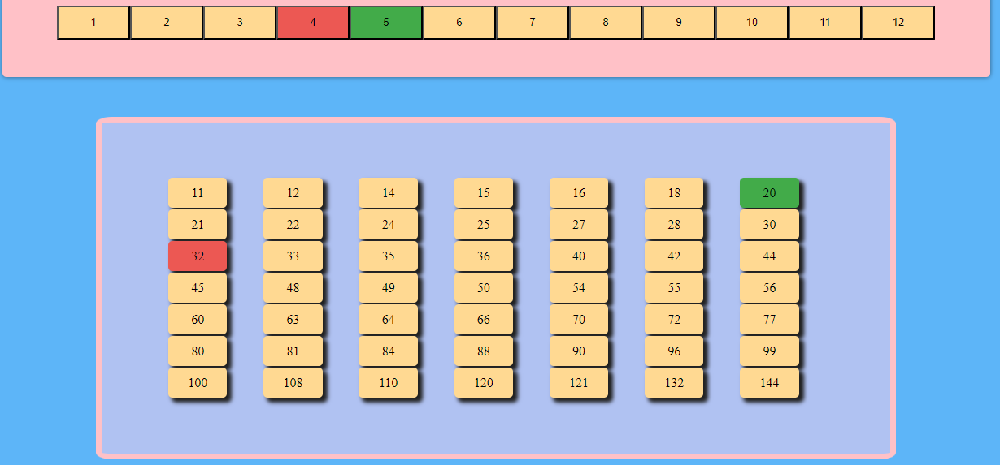
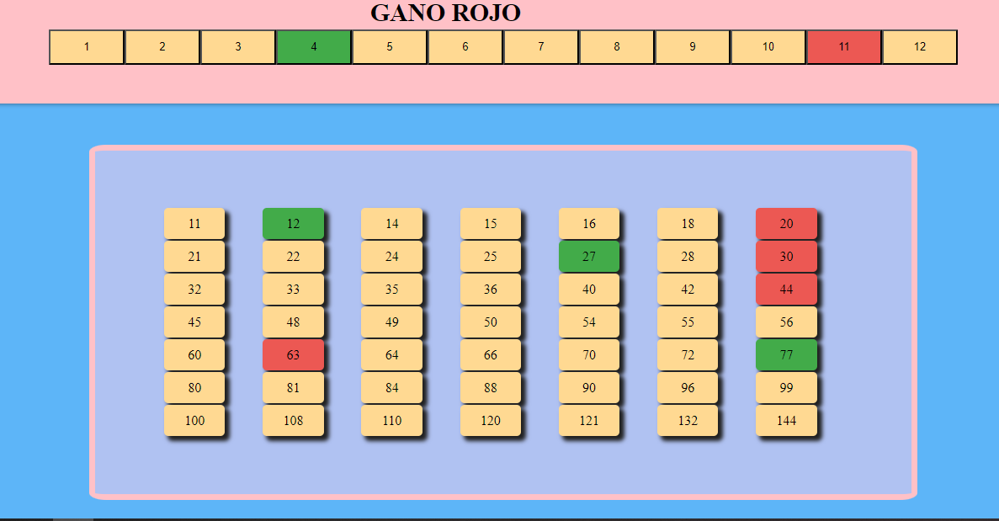

INTRODUCCIÓN "JUEGO DEL GATO"
El juego del gato, es un juego que tiene por objetivo hacer línea de tres casilleros (numeros) seguidos de un tablero.
Reglas del juego
- Se puede jugar solamente de a dos personas o dos grupos.
- Gana el que forme un ta te ti de casillas.
- Se juega por turnos.
- No puede haber empate. El juego seguira hasta haber un ganador, se pueden repintar las casillas
Cómo jugar
- El primer jugador selecciona dos números de la Fila de factores. Puede optar por dos números distintos o el mismo número.

- La multiplicación de esos números, sera remarcada en la grilla de la parte inferior de un color rojo.

- El siguiente jugador, osea verde, va a tener que seleccionar cual numero quiere desmarcar, para luego marcar otro que quiera.
- Ejemplo: Aqui desmarcamos el 8

- Y aqui seleccionamos el 5 para marcar el 20 en la grilla :D

- Por turnos, se reitera el proceso, ganando el primer jugador que ocupa tres numeros seguidos en línea. La línea puede ser horizontal, vertical o diagonal.
